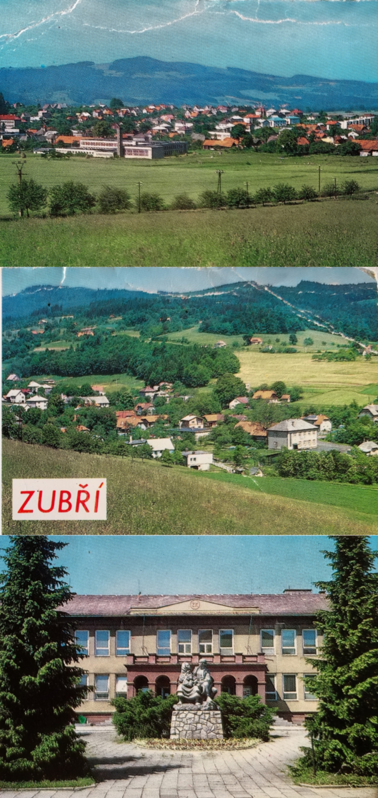
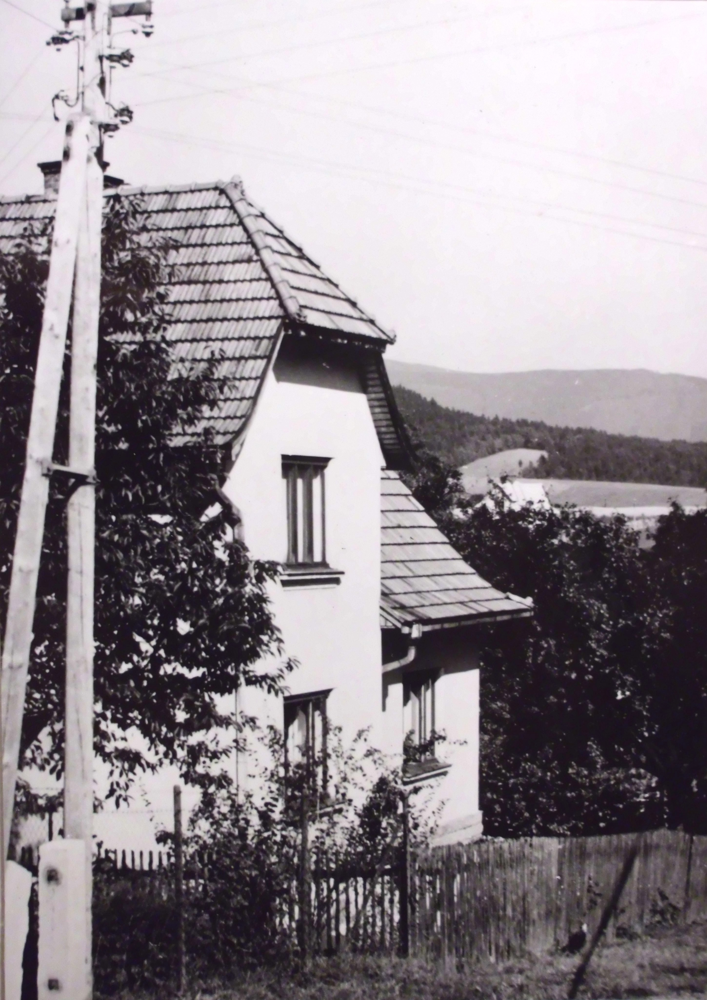
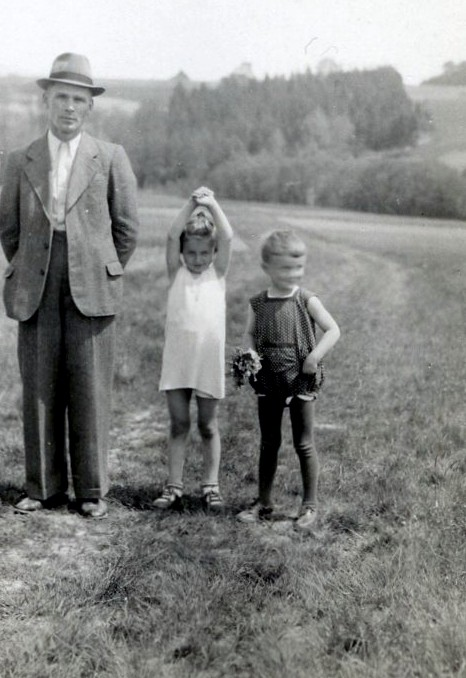
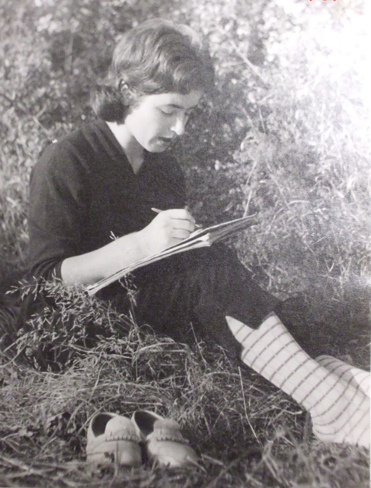
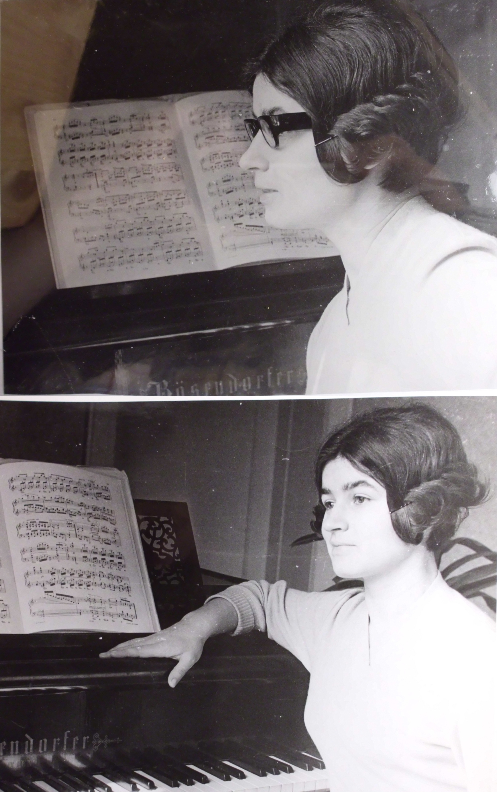
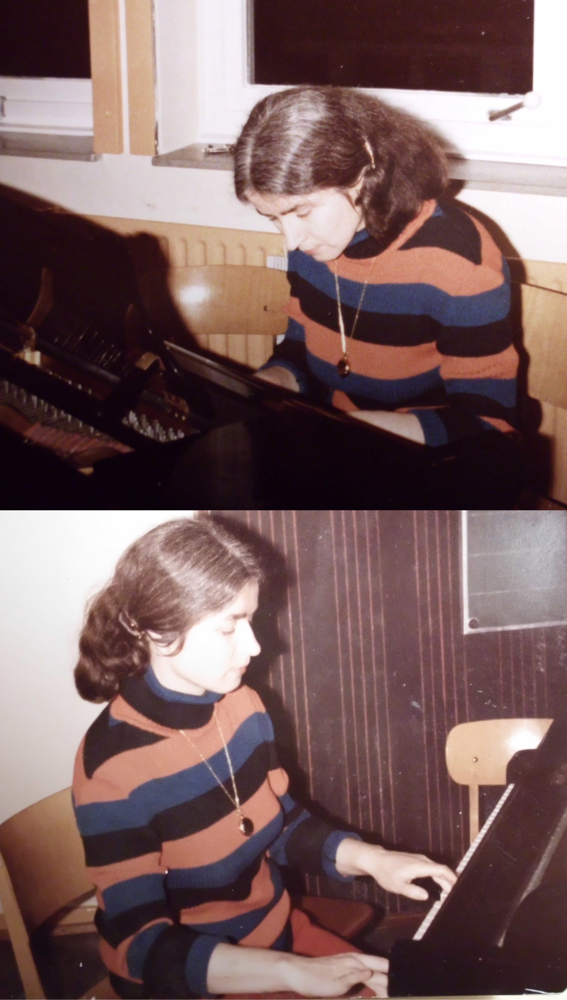
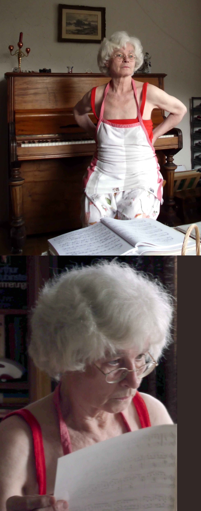
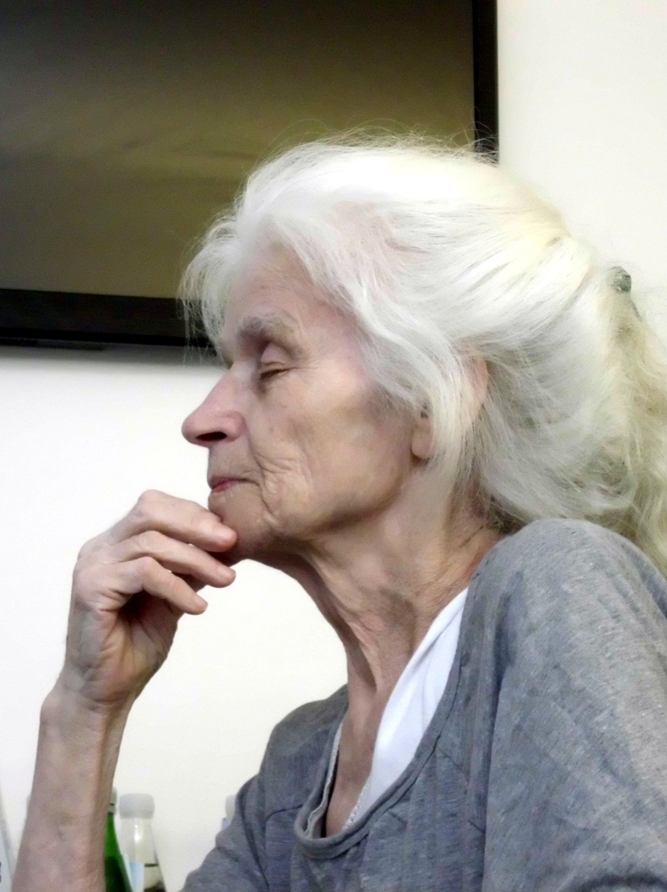
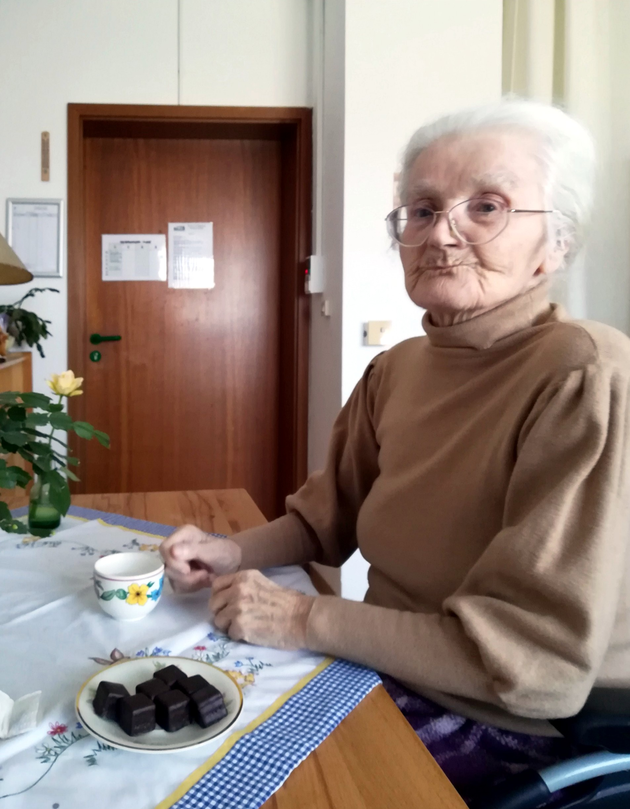
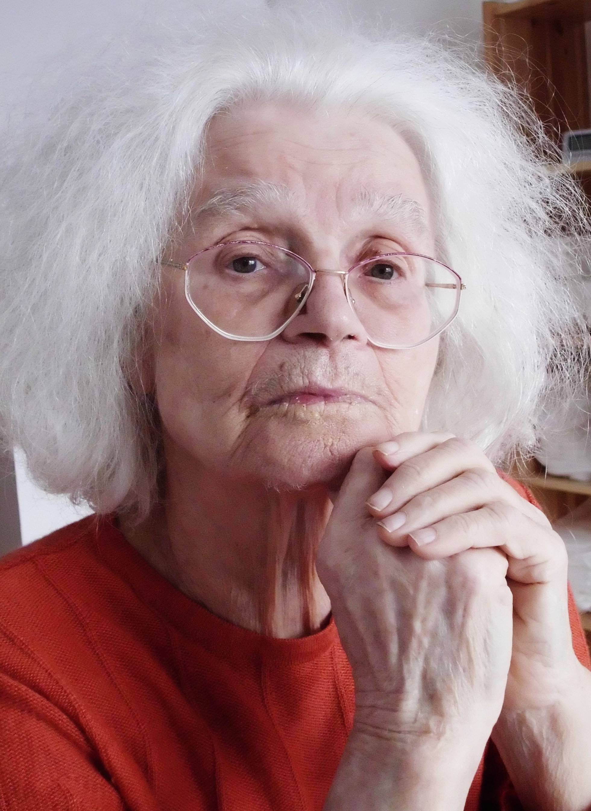

Marta Petrikova
Maiden name: Marta Kolackova.
Born in Zubri (north-eastern Moravia, part of Czechoslovakia).
Studied piano at the conservatories of Brno and Praha (Prague).
As a professional pianist and piano teacher, she emigrated to West Germany.
Currently lives in Marburg and nearby Weimar/Niederweimar (Hessia).
Selected Photographs

Zubri,
the small town in a hilly region of north-western Moravia where Marta
Petrikova was born and raised (from an old postcard).

Her parents house in Zubri, where she grew up.

Together with her elder sister and her father in Zubri in the late 1930ies.

At a Summer sojourn outside of Prague in 1959.

In Zubri at her parent's house around 1960.

Practicing on the grand piano at the Pestalozzi school in Marburg in 1980.

At home in Marburg in 2012.

Recuperating after a femure fracture, Bad Endbach near Marburg, 2019.

At Niederweimar near Marburg in 2024.
|

Photograph taken by the author
at Niederweimar in 2022.
|